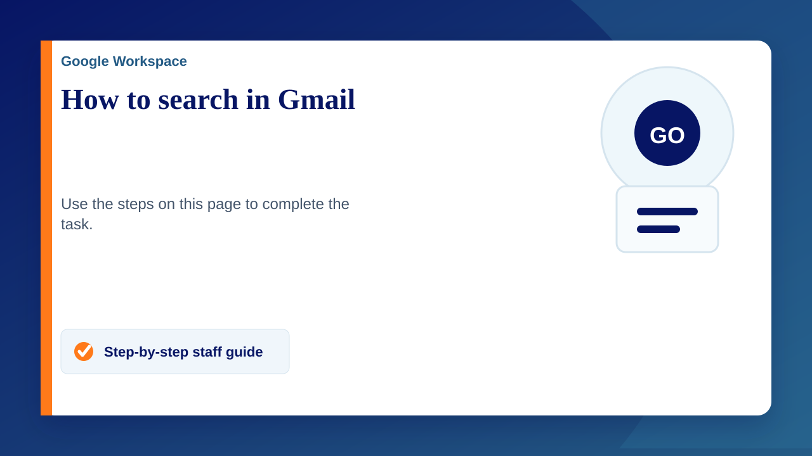

How to search
- On your computer, go to Gmail.
- At the top, in the search box, enter your search criteria.
- When yousearch a person’s email address, the results also show emails that include their alias. To limit the search to only the original email, enclose the search criteria in double quotes. For example: "from: john.doe@gmail.com ".
- When yousearch “from:email", the results also return Drive files shared by that email address.
- Press Enter.
Search for a specific email
Important: Search won't work in offline mode.
- On your computer, go to Gmail.
- In the Search Box at the top, enter what you'd like to find.
- Press Enter. A list of emails will show.
- To further refine the search, use the search filter chips below the Search Box or the search operators in the Search Box.
- To use the search filter chips, click on them. You can click as many as you want.
Tip 1: You can also search for emails from a particular sender. In your inbox, right-click on an email from the sender.
Tip 2: You can search for all unread emails by typing is:unread into the Gmail search box